本文主要是对python数据分析领域的numpy、scipy、matplotlib、pandas基础的学习。
numpy
复习
numpy可以归结为：N维数组，以及定义在其上的操作。
N维数组为定义在其上的各种运算做了基础
overview
- 导入
import numpy as np
from numpy import array sin
%pylab - 数组
a = [1,2,3]
a = array([1,2,3])：numpy的数组可以转变为矩阵 +-×运算时针对于每个元素
下标访问与python列表相同
a.shape
a.shape = 2,2 #转为2×2的矩阵
a * a也是针对每个元素的乘积 - 画图
a = linspace(0, 2*pi, 30) #0：起始，2×pi：结束，30：个数
b = sin(a)
import matplotlib
plot(a,b) 数组中选元素
mask = b>0 #b>0的点位置为True
plot(a[mask],b[mask],’ro’) ‘ro’是线型画图深入
二维图：plot
x = linspace(0, 2*pi, 50)
plot(x, sin(x))plot(x,sin(x),”ro”,
x, sin(2x), 'r-^')scatter散点图
scatter(x, sin(x))x = rand(200)
y = rand(200)
size = rand(200)*30
color = rand(200)
scatter(x,y,size,color)
colorbar()多图
figure()
figure()
plot(x,sin(x))
figure()
plot(x,cos(x))subplot()
subplot(1,2,1) #1行2列，第一个
plot(x,sin(x))
subplot(1,2,2) #1行2列，第二个
plot(x,cos(x))hold()
hold(False)可以在原图上覆盖
标签
plot(x, sin(x), label=’sin’)
legend() #legend:图例或者
plot(x,sin(x))
legend([‘sin’,])坐标轴网格
plot(x,sin(x))
xlabel(‘radians’)
ylabel(‘amplitude’, fontsize=’large’)
title(‘sin(x)’)
grid()清除、关闭
clf()
close()/close(‘all’)imshow
import matplotlib.pyplot ps plt
import matplotlib.image as mpimg
import numpy as nplena = mpimg.imread(‘c:\lena.png’)
plt.imshow(lena, extent=[-25,25,-25,25] cmap=cm.bone) #cmap = colormap直方图
hist(randn(1000))
array属性与切片
- 产生
a = array([1,2,3,4]) - 数组属性
tpye(a) #数组的属性
a.dtype #数组元素的属性
a.shape #a的形状
a.size #a中元组个数
a.nbytes #a所有元素所占的空间
a.ndim #a的维数 - 填充
a.fill(-4.8) #array([-4,-4,-4,-4]),将-4.8转成-4
但是与列表不同，数组中要求所有元素的 dtype 是一样的，如果传入参数的类型与数组类型不一样，需要按照已有的类型进行转换。 切片
a = array([1,2,4,6,8])
a[1:] - a[:-1]
#array([2,4,6,8])-array([1,2,4,6])
#array(1,2,2,2)多维数组索引与引用
a[1,3]
#1是行索引，3是列索引，中间用逗号隔开，事实上，Python会将它们看成一个元组(1,3)，然后按照顺序进行对应。
其实就是第一是行，第二个是列。是按[]来算维数即可
切片是引用
a = array([0,1,2,3,4])
b = a[2:4]
b[0] = 10 #这时候a[2]=10了
但python的列表不会如此。花式索引
a = arange(0,80,10) # 跟range一样from numpy.random import rand
a = rand(10)
mask = a>0.5 #array([True,False,True,False…])
a[mask]where
注意到 where 的返回值是一个元组。
使用元组是由于 where 可以对多维数组使用，此时返回值就是多维的。
在使用的时候，我们可以这样：
a = array([0,2,12,5,20])
where(a>10)[0] #array([2, 4], dtype=int64)
对于多维，where返回值第一个元素对应行，第二个对应列。
array类型
- 复数
a = array([1+1j, 2,3,4])
a.real #实部
a.imag #虚部
a.conf #共轭 - 指定类型
a = array([0,1,2.1,3], dtype=float32)
a.tofile(‘foo.dat’,dtype=uint8)
b = fromfile(‘foo.dat’,dtype=uint8)
修改类型
asarray()
a = array([1.5, -3])
b = asarray(a, dtype=uint8)
c = asarray(a, dtype=float32)
c is a #True
但当类型相同的时候，asarray 并不会产生新的对象，而是使用同一个引用：astype()
b = a.astype(float32)
另外，astype 总是返回原来数组的一份复制，即使转换的类型是相同的：view()
a = array([1,2,3,4], dtype=int32)
b = a.view(uint8)
view 会将 a 在内存中的表示看成是 uint8 进行解析：
array方法
二维数据拥有两个轴：第0轴沿着行的垂直往下，第1轴沿着列的方向水平延伸。
axis = 0 沿行垂直往下
axis = 1 沿列水平往右
- a.*:这类函数也有些也可以直接是直接函数用在数组上
sum：求和
prod:求积product
std：标准差
var：方差
max/min：最值
argmin/argmax:最值的位置
mean:均值
ptp: 最大值与最小值之差
clip: 限定a.clip(3,5),限定在3-5之间，大于5改成5，小于3改成3
round()：近似 - average(a,axis=0,weights=[1,2])
array排序
- sort：类函数与函数
当是类函数时，改变原数组；类函数不改变 - argsort：类函数与函数
升序排列的下标。
当有2个类表相关时，比较好用 - searchsorted
sorted_array = linspace(0,1,5)
values = array([.1,.8,.3,.12,.5,.25])
searchsorted(sorted_array, values)
searchsorted 返回的值相当于保持第一个数组的排序性质不变，将第二个数组中的值插入第一个数组中的位置：
例如 0.1 在 [0.0, 0.25) 之间，所以插入时应当放在第一个数组的索引 1 处，故第一个返回值为 1。array形状
- shape数组属性
修改数组 - reshape数组方法
并不修改 - newaxis
a = arange(3)
y = a[newaxis,:]
x = a[:, newaxis] - squeeze()去除多余轴
a = arange(6)
a.shap(2,1,3)
b = squeeze()
b.shap() #2,3将所有长度为1的维度去掉 - tranpose()转置
a.tranpose() = a.T
是一个view concatenate
concatenate((a1,a2),axis=0/1)
在轴上去连接
z = array((x,y))增加一个维度= vstack/hstack/dstack
- flatten()
将多维转为1维，返回的是复制，不改变原来的 - flat
a.flat，返回的是迭代器
a.flat[:]
是一个view - ravel:
a.ravel()即可
也是将多维变成一维,与faltten不同的是,返回的是view,修改会改变原来的数组 - atlast_1d/atlast_2d
a = array([1,2,3])
b = atlast_2d(a)
b.shap
保证输入满足一定的条件对角线
- a.diagonal(offset=1)：正数表示右移，负数表示左移
- 花式索引
i = [0,1,2]
a[i,i]不过这需要准确的i，不能对不同大小的使用相同的i
数组与字符串转换
- s = a.tostring()
- a = np.fromstring(s, dtype=np.uinit8)
- 相似包括：
文本文件savetxt/loadtxt
二进制文件save/load
数组总结
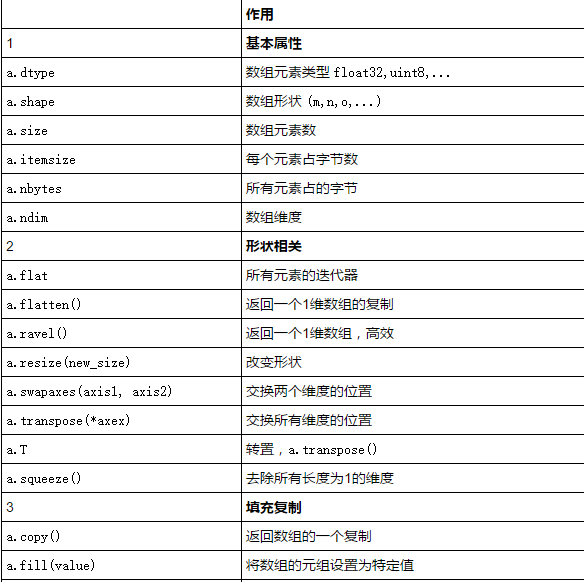
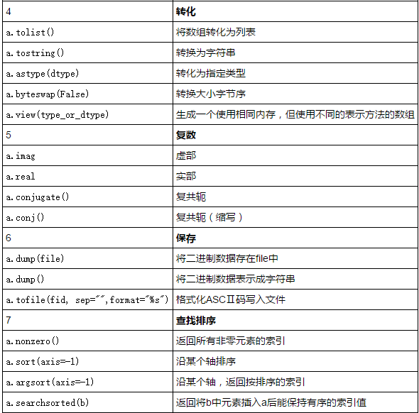
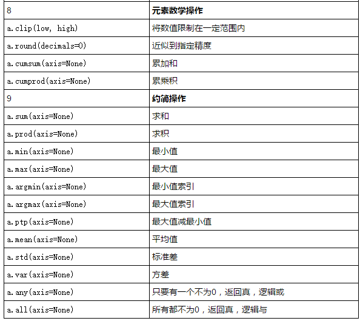
生成
- arange
arange(start, stop=None, step=1, dtype=None) - linsapce
linspace(start, stop, N)
linspace第三个参数是个数，arange第三个参数是步长
产生 N 个等距分布在 [start, stop]间的元素组成的数组 - logspace
logspace(start, stop, N)
产生 N 个对数等距分布的数组，默认以10为底，start是10的start次方的意思 - meshgrid
产生一网格
x_ticks = np.linspace(-1,1,5)
y_ticks = np.linspace(-1,1,5)
x,y = np.meshgrid(x_ticks, y_ticks)
(x,y)就可以组成二维坐标中，从-1，1范围内的网格。
可以用作三维图中做图。
默认为 indexing=’xy’ 即笛卡尔坐标，对于2维数组，返回行向量 x 和列向量 y
或者使用 indexing=’ij’ 即矩阵坐标，对于2维数组，返回列向量 x 和行向量 y。 ogrid/mgrid
ogrid 与 mgrid 的区别在于：
ogrid 相当于 meshgrid(indexing=’ij’, sparse=True)
mgrid 相当于 meshgrid(indexing=’ij’, sparse=False)x, y = np.ogrid[-1:1:.5, -1:1:.5] #x是列，y是行。0.5是步长
我们在 step 的位置传入一个复数 5j ，表示我们需要一个 5 个值的数组，此时返回值就会包含 end 的值。5j的意思就是需要5个值。r_,c_：使用 r_ / c_ 来产生行向量或者列向量。
np.r_[0:1:.1]
np.c_[1:3:5j]ones/zeros/empty
np.zeros(3)
np.ones([2,3], dtype=np.float32)
a = np.empty(2) #此时a是随机值
a.fill(5)ones_like,empty_like,zeros_like
empty_like(a)
ones_like(a)
zeros_like(a)
产生一个跟 a 大小一样，类型一样的对应数组。identity
indentity(n, dtype=float64)
产生一个 n 乘 n 的单位矩阵：矩阵
a = np.array([[1,2,3],[2,5,6],[1,2,4]]
np.mat(a)
a = mp.mat(‘1,2,3;4,5,6;7,8,9’)
a.I表示矩阵的逆矩阵
矩阵的运算呢？
一般函数
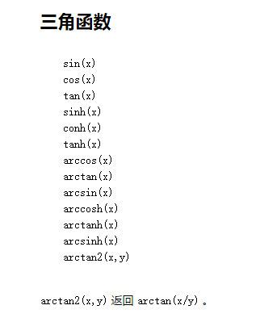
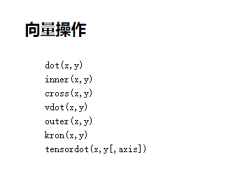
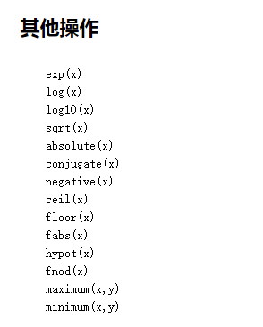
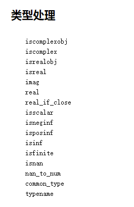
向量化函数
就是将自定义的函数能够对数组中每个元素起作用
def sinc(x):
if x == 0.0:
return 1.0
else:
w = np.pi * x
return np.sin(w) / w
x = np.array([1,2,3])
vsinc = np.vectorize(sinc)
vsinc(x)
运算
- 算数运算
- 比较与逻辑
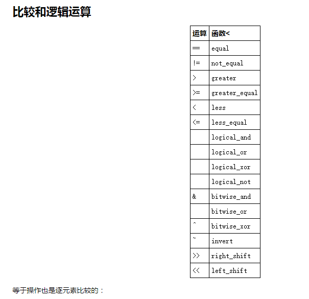
ufunc对象
Numpy 有两种基本对象：ndarray (N-dimensional array object) 和 ufunc (universal function object)。ndarray 是存储单一数据类型的多维数组，而 ufunc 则是能够对数组进行处理的函数。
- reduce
将op沿着某个轴应用，使得数组 a 的维数降低一维。 accumulate
accumulate 可以看成保存 reduce 每一步的结果所形成的数组
a = np.array([1,2,3])
np.add.accumulate(a) #[1,3,6]reduceat
op.reduceat(a, indices)
reduceat 方法将操作符运用到指定的下标上，返回一个与 indices 大小相同的数组：outer
op.outer(a, b)
对于 a 中每个元素，将 op 运用到它和 b 的每一个元素上所得到的结果：choose函数实现条件筛选
control = np.array([[1,0,1],
[2,1,0], [1,2,2]])
np.choose(control, [10, 11, 12])
array([[11, 10, 11],
[12, 11, 10],
[11, 12, 12]])
数组维度匹配
Numpy还是根据两者的维度，自动将它们进行扩展然后进行计算
对于一位的，若列相同，会自动进行扩展
数组读写
- np.savetxt()/np.loadtxt()
loadtxt(fname, dtype=,
delimiter 就是刚才用到的分隔符参数。comments='#', delimiter=None, converters=None, skiprows=0, usecols=None, unpack=False, ndmin=0)
skiprows 参数表示忽略开头的行数，可以用来读写含有标题的文本
data = np.loadtxt(‘myfile.txt’,
skiprows=1, #忽略第一行
dtype=np.int, #数组类型
delimiter=’,’, #逗号分割
usecols=(0,1,2,4), #指定使用哪几列数据
comments=’%’ #百分号为注释符
)
import datetime
def date_converter(s):
return datetime.datetime.strptime(s, “%Y-%m-%d”)
data = np.loadtxt(‘myfile.txt’,
dtype=np.object, #数据类型为对象
converters={0:date_converter, #第一列使用自定义转换方法
1:float, #第二第三使用浮点数转换
2:float})
结构化数组
就是数据库的表，将shema用类型来表示
my_dtype = np.dtype([(‘mass’, ‘float32’), (‘vol’, ‘float32’)])
a.view(my_dtype)
person_dtype = np.dtype([(‘name’, ‘S10’), (‘age’, ‘int’), (‘weight’, ‘float’)])
people = np.loadtxt(‘people.txt’,
skiprows=1,
dtype=person_dtype)
- 嵌套类型
particle_dtype = np.dtype([(‘position’, [(‘x’, ‘float’),('y', 'float')]), ('mass', 'float') ])
记录数组
与结构化数组很像，简直就一样
partical_dtype = np.dtype([(‘mass’, ‘float’),
(‘velocity’, ‘float’)])
from numpy import rec
particals_rec = rec.fromrecords([(1,1), (1,2), (2,1), (1,3)],
dtype = partical_dtype)
也看可以通过域来查询
particals_rec[‘mass’]
可以将结构化数据转为记录数据
particals = np.array([(1,1), (1,2), (2,1), (1,3)],
dtype = partical_dtype)
使用 view 方法看成 recarray ：
particals_rec = particals.view(np.recarray)
并没有发现记录数组网上
内存映射
help(memmap)的内容足够说明内存映射：
Memory-mapped files are used for accessing small segments of large files
on disk, without reading the entire file into memory.
内存映射也是一种处理文件的方法，主要的函数有：
memmap
frombuffer
ndarray constructor
memmap(filename,
dtype=uint8,
mode=’r+’
offset=0
shape=None
order=0)
mode 表示文件被打开的类型：
r 只读
c 复制+写，但是不改变源文件
r+ 读写，使用 flush 方法会将更改的内容写入文件
w+ 写，如果存在则将数据覆盖
offset 表示从第几个位置开始。
array or matrix
array本身就是多维的，2维的时候就是matrix，这里介绍了为什么上边的martix介绍比较小，因为都用array代替。
array 还是 matrix？
Numpy 中不仅提供了 array 这个基本类型，还提供了支持矩阵操作的类 matrix，但是一般推荐使用 array：
很多 numpy 函数返回的是 array，不是 matrix
在 array 中，逐元素操作和矩阵操作有着明显的不同
向量可以不被视为矩阵
具体说来：
#， dot(), multiply()
array： -逐元素乘法，dot() -矩阵乘法
matrix： -矩阵乘法，multiply() -逐元素乘法
处理向量
array：形状为 1xN, Nx1, N 的向量的意义是不同的，类似于 A[:,1] 的操作返回的是一维数组，形状为 N，一维数组的转置仍是自己本身
matrix：形状为 1xN, Nx1，A[:,1] 返回的是二维 Nx1 矩阵
高维数组
array：支持大于2的维度
matrix：维度只能为2
属性
array：.T 表示转置
matrix：.H 表示复共轭转置，.I 表示逆，.A 表示转化为 array 类型
构造函数
array：array 函数接受一个（嵌套）序列作为参数——array([[1,2,3],[4,5,6]])
matrix：matrix 函数额外支持字符串参数——matrix(“[1 2 3; 4 5 6]”)
其优缺点各自如下：
array
[GOOD] 一维数组既可以看成列向量，也可以看成行向量。v 在 dot(A,v) 被看成列向量，在 dot(v,A) 中被看成行向量，这样省去了转置的麻烦
[BAD!] 矩阵乘法需要使用 dot() 函数，如： dot(dot(A,B),C) vs ABC
[GOOD] 逐元素乘法很简单： AB
[GOOD] 作为基本类型，是很多基于 numpy 的第三方库函数的返回类型
[GOOD] 所有的操作 ,/,+,*,… 都是逐元素的
[GOOD] 可以处理任意维度的数据
[GOOD] 张量运算
matrix
[GOOD] 类似与 MATLAB 的操作
[BAD!] 最高维度为2
[BAD!] 最低维度也为2
[BAD!] 很多函数返回的是 array，即使传入的参数是 matrix
[GOOD] AB 是矩阵乘法
[BAD!] 逐元素乘法需要调用 multiply 函数
[BAD!] / 是逐元素操作
当然在实际使用中，二者的使用取决于具体情况。
二者可以互相转化：
asarray ：返回数组
asmatrix（或者mat） ：返回矩阵
asanyarray ：返回数组或者数组的子类，注意到矩阵是数组的一个子类，所以输入是矩阵的时候返回的也是矩阵
scipy
简介
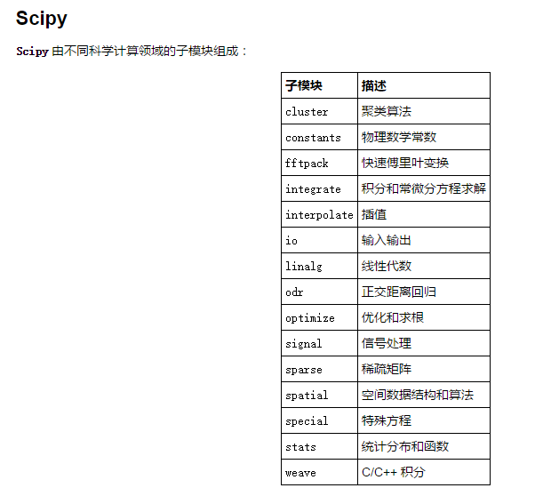
插值:interp1d
使用
先通过已有的数据，设置一个interpld的函数，然后通过调用此函数就可以返回插值的结果
from scipy.interpolate import interp1d
ch4_cp = interp1d(data[‘TK’], data[‘Cp’])
ch4_cp(382.2)线性插值
我们可以通过 kind 参数来调节使用的插值方法，来得到不同的结果：
nearest 最近邻插值:
cp_ch4 = interp1d(data[‘TK’], data[‘Cp’], kind=”nearest”)
zero 0阶插值
cp_ch4 = interp1d(data[‘TK’], data[‘Cp’], kind=”zero”)
linear 线性插值
quadratic 二次插值
cp_ch4 = interp1d(data[‘TK’], data[‘Cp’], kind=”quadratic”)
cubic 三次插值
cp_ch4 = interp1d(data[‘TK’], data[‘Cp’], kind=”cubic”)
4,5,6,7 更高阶插值
cp_ch4 = interp1d(data[‘TK’], data[‘Cp’], kind=4)概率统计方法:stats
连续分布：
正态分布：norm
from scipy.stats import norm
norm.rvs 产生指定参数的随机变量:rvs=random variates
x_norm = norm.rvs(size=500)norm.pdf 返回对应的概率密度函数值
x1 = linspace(-2,2,108)
norm.pdf(x1)
norm.pdf(x1, loc=0, scale=1)norm.cdf 返回对应的累计分布函数值
norm.fit 返回给定数据下，各参数的最大似然估计（MLE）值
x_mean, x_std = norm.fit(x_norm)- 对数正态:lognorm
离散分布
二项分布：binom
num_trials = 60
x = arange(num_trials)
plot(x, binom(num_trials, 0.5).pmf(x), ‘o-‘, label=’p=0.5’)泊松分布：
x = arange(0,21)
Probability mass function:pmf，概率质量函数
plot(x, poisson(1).pmf(x), ‘o-‘, label=r’$\lambda$=1’)自定义离散分布rv_discrete
xk = [1, 2, 3, 4, 5, 6]
pk = [.3, .35, .25, .05, .025, .025]loaded = rv_discrete(values=(xk, pk))
loaded.rvs(size=2) #产生2个服从分布的随机变量曲线拟合：polyfit,poly1d
多项式拟合
1
2
3
4
5
6
7
8
9
10from numpy import polyfit, poly1d
x = np.linspace(-5, 5, 100)
y = 4 * x + 1.5
noise_y = y + np.random.randn(y.shape[-1]) * 2.5
# polyfit返回的是参数
coeff = polyfit(x, noise_y, 1) #一阶多项式拟合
# poly1d返回就是参数对应的函数,可以至今进行调用
y3 = poly1d(polyfit(x,y,3)) 3阶拟合
最小二乘拟合:lstsq
sciplinalg.lstsq
一般来书，当我们使用一个 N-1 阶的多项式拟合这 M 个点时，有这样的关系存在：
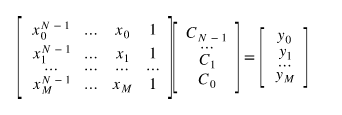
要得到 C ，可以使用 scipy.linalg.lstsq 求最小二乘解。
这里，我们使用 1 阶多项式即 N = 2，先将 x 扩展成 X：
1 | X = np.hstack((x[:,np.newaxis], np.ones((x.shape[-1],1)))) |
线性回归:linregress
from scipy.stats import linregress
slope, intercept, r_value, p_value, stderr = linregress(x, y)
p = plt.plot(x, slope * x + intercept, ‘k–’)
更高级拟合
from scipy.optimize import leastsq
最优（最值）minimize
from scipy.optimize import minimize
result = minimize(neg_dist, 40, args=(1,))
minimize 接受三个参数：第一个是要优化的函数，第二个是初始猜测值，第三个则是优化函数的附加参数，默认 minimize 将优化函数的第一个参数作为优化变量，所以第三个参数输入的附加参数从优化函数的第二个参数开始。
from scipy.optimize import rosen
rosen函数就是一个三维中有各种极值的函数
利用 callback 参数查看迭代的历史：
x0 = [-1.5, 4.5]
xi = [x0]
result = minimize(rosen, x0, callback=xi.append)
xi = np.asarray(xi)
print xi.shape
print result.x
优化：
Jacobian:类似于梯度递减
result = minimize(rosen, x0, jac=rosen_der, callback=xi.append)
result = minimize(rosen, x0, method=”nelder-mead”, callback = xi.append)
result = minimize(rosen, x0, method=”powell”, callback=xi.append)
积分:quad/simps/trapz
符号积分
from sympy import symbols, integrate
import sympy
from sympy import init_printing
init_printing()x,y = symbols(‘x y’)
z = sympy.sqrt(x2 + y2)
z.subs(x,3).subs(y,4)from sympy.abc import theta
y = sympy.sin(theta) ** 2
Y = integrate(y)
Y.subs(theta, np.pi) - Y.subs(theta, 0)
数值积分：quad 参数出函数及上下限
from scipy.integrate import quad
interval = [0., inf]def g(x):
return np.exp(-x * 1/2)
value, max_err = quad(g, interval)双重积分
采样点积分：trapz方法 与 simps方法，参数是y值与x值
from scipy.integrate import trapz, simpsx_s = np.linspace(0, np.pi, 5)
y_s = np.sin(x_s)
x = np.linspace(0, np.pi, 100)
y = np.sin(x)
result_s = trapz(y_s, x_s)
result_s_s = simps(y_s, x_s)
微分方程：odeint
from scipy.integrate import odeint
def dy_dt(y, t):
return np.sin(t)
t = np.linspace(0, 2*pi, 100)
result = odeint(dy_dt, 0, t)
线性代数：linalg
from scipy import linalg
求逆
A = np.array([[1,2],[3,4]])
print linalg.inv(A)求解线性方程组：solve
A = np.array([[1, 3, 5],[2, 5, 1], [2, 3, 8]])b = np.array([10, 8, 3])
x = linalg.solve(A, b)行列式
A = np.array([[1, 3, 5],[2, 5, 1], [2, 3, 8]])print linalg.det(A)
矩阵的范数:linalg.norm
A = np.array([[1, 2],[3, 4]])print linalg.norm(A)
print linalg.norm(A,1) #6 L1 norm 最大列和
print linalg.norm(A,-1) #4 L -1 norm 最小列和
print linalg.norm(A,np.inf) #7 L inf norm 最大行和最小二乘解和伪逆
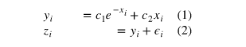1
2
3
4
5
6
7
8
9
10
11
12
13
14
15
16
17
18
19
20
21
22
23
24
25
26
27
28
29
30
31
32
33
34
35
36
37
38
39
40
41
42
43
44
45
46
47
48
49
50
51
52
53
54
55
56
57
58
59
60
61
62
63
64
65
66
67
68
69
70
71
72
73
74
75
76c1, c2 = 5.0, 2.0
i = np.r_[1:11]
xi = 0.1*i
yi = c1*np.exp(-xi) + c2*xi
zi = yi + 0.05 * np.max(yi) * np.random.randn(len(yi))
#A这一步
#这一步就是给e**-xi 多加了一列 xi ，就是给出yi = c1 e ** -x + c2*x
A = np.c_[np.exp(-xi)[:, np.newaxis], xi[:, np.newaxis]]
c, resid, rank, sigma = linalg.lstsq(A, zi)
print c
```s
其中 c 的形状与 zi 一致，为最小二乘解，resid 为 zi - A c 每一列差值的二范数，rank 为矩阵 A 的秩，sigma 为矩阵 A 的奇异值。
- 广义逆
linalg.pinv 或 linalg.pinv2 可以用来求广义逆，其区别在于前者使用求最小二乘解的算法，后者使用求奇异值的算法求解。
- 特征值与特征向量：linalg.eig(A)
linalg.eig(A) #返回矩阵的特征值与特征向量
linalg.eigvals(A) #返回矩阵的特征值
linalg.eig(A, B) #求解 $\mathbf{Av} = \lambda\mathbf{Bv}$ 的问题
- 奇异值分解：linalg.svd(A)


U,s,Vh = linalg.svd(A) #返回U 矩阵，奇异值s，$V^H$ 矩阵
Sig = linalg.diagsvd(s,M,N) #从奇异值恢复
- LU分解： linalg.lu(A)
A = np.array([[1,2,3],[4,5,6]])
P, L, U = linalg.lu(A)
- 矩阵函数
指数：linalg.expm3(A) /linalg.expm2
对数： inalg.logm(linalg.expm(A))
## 稀疏矩阵：scipy.sparse
### 简介
coo_matrix(arg1[, shape, dtype, copy]) A sparse matrix in COOrdinate format.
csc_matrix(arg1[, shape, dtype, copy]) Compressed Sparse Column matrix
csr_matrix(arg1[, shape, dtype, copy]) Compressed Sparse Row matrix
### 构建
from scipy.sparse import *
A = coo_matrix([[1,2,0],[0,0,3],[4,0,5]])
参数是一个array
不同格式的稀疏矩阵可以相互转化
B = A.tocsr() #转化为csr
C = A.todense() #转化为普通矩阵
还可以传入一个 (data, (row, col)) 的元组来构建稀疏矩阵：这种应该是以后的方法
I = np.array([0,3,1,0]) #行
J = np.array([0,3,1,2]) #列
V = np.array([4,5,7,9]) #数值
A = coo_matrix((V,(I,J)),shape=(4,4))
### 求解微分方程
```python
from scipy.sparse import lil_matrix
from scipy.sparse.linalg import spsolve
from numpy.linalg import solve, norm
from numpy.random import rand
A = lil_matrix((1000, 1000))
A[0, :100] = rand(100)
A[1, 100:200] = A[0, :100]
A.setdiag(rand(1000))
#转化为csr求解
A = A.tocsr()
b = rand(1000)
x = spsolve(A, b)
#正常数组求解
x_ = solve(A.toarray(), b)
sparse.find
返回一个三元组，表示稀疏矩阵中非零元素的 (row, col, value)
sparse.issparse
查看一个对象是否为稀疏矩阵：
稀疏矩阵的线性代数
矩阵操作
scipy.sparse.linalg.inv #稀疏矩阵求逆
scipy.sparse.linalg.expm #求稀疏矩阵的指数函数矩阵范数
scipy.sparse.linalg.norm #稀疏矩阵求范数
matplotlib
思考
画图最主要的是：1.画的图要准确，2.要有相应图例、注释、文字解释
figures,axes,ticks对象
组成关系

指的是fig可以有多个axes组成，ax对象有各自的ticks,data,title等内容
figure对象
figure 对象是最外层的绘图单位，默认是以 1 开始编号（MATLAB 风格，Figure 1, Figure 2, …），可以用 plt.figure() 产生一幅图像，除了默认参数外，可以指定的参数有：
num - 编号
figsize - 图像大小
dpi - 分辨率
facecolor - 背景色
edgecolor - 边界颜色
frameon - 边框
这些属性也可以通过 Figure 对象的 set_xxx 方法来改变
subplot 和 axes 对象
subplot 返回的是 Axes 对象，但是 Axes 对象相对于 subplot 返回的对象来说要更自由一点。Axes 对象可以放置在图像中的任意位置
subplot(2,1,1)
xticks([]), yticks([])
text(0.5,0.5, ‘subplot(2,1,1)’,ha=’center’,va=’center’,size=24,alpha=.5)
用gridspec来设定每个axes的位置
import matplotlib.gridspec as gridspec
G = gridspec.GridSpec(3, 3)
axes_1 = subplot(G[0, :])
xticks([]), yticks([])
text(0.5,0.5, ‘Axes 1’,ha=’center’,va=’center’,size=24,alpha=.5)
axes_2 = subplot(G[1,:-1])
xticks([]), yticks([])
text(0.5,0.5, ‘Axes 2’,ha=’center’,va=’center’,size=24,alpha=.5)
画图一般用ax.plot()来做图
ticks对象
ticks 用来注释轴的内容，我们可以通过控制它的属性来决定在哪里显示轴、轴的内容是什么等等。
画图pyplot.plot
pyplot函数
import matplotlib.pyplot as plt
plt.plot(x,y, format_str)用来画图，但它只是一个画图函数，并不会返回figures对象
线条属性
颜色：rgb,c(cyan青色),m(magenta品红),y(yellow)k(black)w(white)
线性：-实线，o圆圈，–虚线
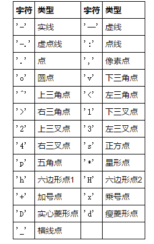
p = plt.plot(x, c, color=”blue”, linewidth=2.5, linestyle=”-“)
风格
plt.style.available可以查看可用的风格
plt.style.use(‘ggplot’)
plt.plot(x, y)
plt.show()
图例legend
line_up, = plt.plot([1,2,3], label=’Line 2’)
line_down, = plt.plot([3,2,1], label=’Line 1’)
plt.legend(handles=[line_up, line_down])
plt.show()
line_up, = plt.plot([1,2,3])
line_down, = plt.plot([3,2,1])
plt.legend([line_up, line_down], [‘Line Up’, ‘Line Down’])
plt.show()
位置
图例可以用各种形状，以及可以选择放置的位置
plt.legend(handles=[line2], loc=4)
| loc string | loc code |
|---|---|
| ‘best’ | 0 |
| ‘uppder right’ | 1 |
| ‘upder left’ | 2 |
| ‘lower left’ | 3 |
| ‘lower right’ | 4 |
| ‘right’ | 5 |
| ‘center left’ | 6 |
| ‘center right’ | 7 |
| ‘lower center’ | 8 |
| ‘upper center’ | 9 |
| ‘center’ | 10 |
1 | # 形状：将形状放在handles中 |
文本text
text() 在 Axes 对象的任意位置添加文本
xlabel() 添加 x 轴标题
ylabel() 添加 y 轴标题
title() 给 Axes 对象添加标题
figtext() 在 Figure 对象的任意位置添加文本
suptitle() 给 Figure 对象添加标题
anotate() 给 Axes 对象添加注释（可选择是否添加箭头标记）
到这里已经可以进行做图了。
1 | fig = plt.figure(figsize=(12, 9)) |
文字r’$\ $’
plt.title(r’$\alpha > \beta$’)
使用 _ 和 ^ 表示上下标：
r’$\alpha_i > \beta_i$’
分数：r’$\frac{5}$’
根号：r’$\sqrt{2}$’
注释annotate
bbox_props = dict(boxstyle=”round”, fc=”w”, ec=”0.5”, alpha=0.9)
ax.text(-2, -2, “Sample A”, ha=”center”, va=”center”, size=20,
bbox=bbox_props)
text的参数为，位置，文字，对齐，最后边逛的形状等等
边框形状包括：square方形，round方圆，larrow左箭头，circle原型，rarrow右箭头
这就是就画个箭头，用文字进行说明
plt.figure(1, figsize=(3,3))
ax = plt.subplot(111)
ax.annotate(“”,
xy=(0.2, 0.2), xycoords=’data’,
xytext=(0.8, 0.8), textcoords=’data’,
arrowprops=dict(arrowstyle=”->”,
connectionstyle=”arc3”),
)
plt.show()
实例:饼图、条状图、表格等
直方图
1 | import numpy as np |
条状图plt.bar
import numpy as np
import matplotlib.pyplot as plt
n_groups = 5
means_men = (20, 35, 30, 35, 27)
std_men = (2, 3, 4, 1, 2)
means_women = (25, 32, 34, 20, 25)
std_women = (3, 5, 2, 3, 3)
fig, ax = plt.subplots()
index = np.arange(n_groups)
bar_width = 0.35
opacity = 0.4
error_config = {‘ecolor’: ‘0.3’}
rects1 = plt.bar(index, means_men, bar_width,
alpha=opacity,
color=’b’,
yerr=std_men,
error_kw=error_config,
label=’Men’)
rects2 = plt.bar(index + bar_width, means_women, bar_width,
alpha=opacity,
color=’r’,
yerr=std_women,
error_kw=error_config,
label=’Women’)
plt.xlabel(‘Group’)
plt.ylabel(‘Scores’)
plt.title(‘Scores by group and gender’)
plt.xticks(index + bar_width, (‘A’, ‘B’, ‘C’, ‘D’, ‘E’))
plt.legend()
plt.tight_layout()
plt.show()
表格plt.table
1 | import numpy as np |
图像
1 | import matplotlib.pyplot as plt |
pandas
简介
pandas 中有三种基本结构：
Series：1D labeled homogeneously-typed array
DataFrame：General 2D labeled, size-mutable tabular structure with potentially heterogeneously-typed columns
Panel：General 3D labeled, also size-mutable array
一维数据结构：Series
介绍
Series 是一维带标记的数组结构，可以存储任意类型的数据（整数，浮点数，字符串，Python 对象等等）。作为一维结构，它的索引叫做 index，基本调用方法为
s = pd.Series(data, index=index)
data 可以是以下结构：
字典
ndarray
标量，例如 5从ndarray创建
s = pd.Series(np.random.randn(5), index=[“a”, “b”, “c”, “d”, “e”])
如果 data 是个 ndarray，那么 index 的长度必须跟 data 一致
如果 index 为空，那么 index 会使用 [0, …, len(data) - 1]：从字典中构造
如果 data 是个 dict，如果不给定 index，那么 index 将使用 dict 的 key 排序之后的结果
d = {‘a’ : 0., ‘b’ : 1., ‘c’ : 2.}如果给定了 index，那么将会按照 index 给定的值作为 key 从字典中读取相应的 value，如果 key 不存在，对应的值为 NNa
从标量构造
如果 data 是标量，那么 index 值必须被指定，得到一个值为 data 与 index 等长的 Series：
pd.Series(5., index=[‘a’, ‘b’, ‘c’, ‘d’, ‘e’])访问
可以向ndarray一样使用：s[0]， s[:3], mask访问s[s > s.median()]，花式索引s[[4, 3, 1]]
支持numpy函数：np.exp(s)像字典一样使用
s[“a”]
s.get(“f”, np.nan)向量化操作
s + s
s * 2
s[1:] + s[:-1]Name属性
s = pd.Series(np.random.randn(5), name=’something’)
s.name直方图
s = pd.Series(np.random.randint(0, 7, size=10))
print s.value_counts()
h = s.hist()字符串方法
当 Series 或者 DataFrame某一列是字符串时，我们可以用 .str 对这个字符串数组进行字符串的基本操作
s = pd.Series([‘A’, ‘B’, ‘C’, ‘Aaba’, ‘Baca’, np.nan, ‘CABA’, ‘dog’, ‘cat’])s.str.lower()
时间序列
rng = pd.date_range(‘3/6/2012 00:00’, periods=5, freq=’D’)
ts = pd.Series(np.random.randn(len(rng)), rng)标准时间表示：
ts_utc = ts.tz_localize(‘UTC’)
改变时区表示：
ts_utc.tz_convert(‘US/Eastern’)
二维数据结构：DataFrame
介绍
DataFrame 是 pandas 中的二维数据结构，可以看成一个 Excel 中的工作表，或者一个 SQL 表，或者一个存储 Series 对象的字典。
DataFrame(data, index, columns) 中的 data 可以接受很多数据类型：
一个存储一维数组，字典，列表或者 Series 的字典
2-D 数组
结构或者记录数组
一个 Series
另一个 DataFrame从Series字典构造
d = {‘one’ : pd.Series([1., 2., 3.], index=[‘a’, ‘b’, ‘c’]),
‘two’ : pd.Series([1., 2., 3., 4.], index=[‘a’, ‘b’, ‘c’, ‘d’])}df = pd.DataFrame(d)
如果指定了 columns 值，会去字典中寻找，找不到的值为 NaN
pd.DataFrame(d, index=[‘d’, ‘b’, ‘a’], columns=[‘two’, ‘three’])从 ndarray 或者 list 字典中构造
d = {‘one’ : [1., 2., 3., 4.],
‘two’ : [4., 3., 2., 1.]}
pd.DataFrame(d)2-D数据
df = pd.DataFrame(np.random.randn(2,3), index=[‘a’,’b’], column=[‘job’,’position’])dates = pd.date_range(‘20130101’, periods=6)
df = pd.DataFrame(np.random.randn(6,4), index=dates, columns=list(‘ABCD’))从结构数组中
data = np.zeros((2,), dtype=[(‘A’, ‘i4’),(‘B’, ‘f4’),(‘C’, ‘a10’)])
data[:] = [(1,2.,’Hello’), (2,3.,”World”)]pd.DataFrame(data)
其他：
DataFrame.from_dict 从现有的一个字典中构造，
DataFrame.from_records 从现有的一个记录数组中构造
DataFrame.from_items 从字典的 item 对构造列操作
DataFrame 可以类似于字典一样对列进行操作
df[“one”]添加新列：
df[‘three’] = df[‘one’] * df[‘two’]删除：
del df[“two”]
three = df.pop(“three”)默认新列插入位置在最后，也可以指定位置插入：
df.insert(1, ‘bar’, df[‘one’]) #在第一列后插入新列‘bar’，值就是df[‘one’]列的值df.assign(test=df[“one”] + df[“bar”])
索引和选择
| Operation | Syntax | Result |
| - | :-: | -: |
| Select Column | df[col] | Series |
| Select row by label | df.loc[label] | Series |
| Select row by integer location | df.iloc[loc] | Series |
| Slice rows | df[5:10] | DataFrame |查看数据
head 和 tail 方法可以分别查看最前面几行和最后面几行的数据（默认为 5）：
df.head()
df.tail(3)下标、列标、数据
df.index
df.columns
df.values统计数据
df.describe()转置
df.T排序
将行的index进行排序
sort_index(axis=0, ascending=True) 方法按照下标大小进行排序，axis=0 表示按第 0 维进行排序。将列的index进行排序
df.sort_index(axis=1, ascending=False)排序内容
sort_values(by=””, axis=0, ascending=True) 方法按照 by 的值的大小进行排序，例如按照 B 列的大小：缺失数据
df1 = df.reindex(index=dates[0:4], columns=list(df.columns) + [‘E’])
创建一个新的df，并增加一个新的列“E”df1.loc[dates[0]:dates[1],’E’] = 1
将前新列前2行赋值1，后两行自然为Nna丢弃所有缺失数据的行得到的新数据
df1.dropna(how=’any’)填充缺失数据：
df1.fillna(value=5)检查缺失数据的位置：
pd.isnull(df1)计算操作
统计信息
df.mean() #每一列的均值：
df.mean(1) #每一行的均值：apply操作
apply函数将参数的传入的函数，作用到每一列上：
df.apply(np.cumsum)#行累加df.apply(lambda x: x.max() - x.min())
行合并concat
df = pd.DataFrame(np.random.randn(10, 4))
pieces = [df[:2], df[4:5], df[7:]]
pd.concat(pieces)列合并join
merge 可以实现数据库中的 join 操作：
left = pd.DataFrame({‘key’: [‘foo’, ‘foo’], ‘lval’: [1, 2]})
right = pd.DataFrame({‘key’: [‘foo’, ‘foo’], ‘rval’: [4, 5]})
pd.merge(left, right, on=’key’)join是inner join
append：添加新行
s = df.iloc[3]
df.append(s, ignore_index=True)
将第三行的值添加到最后：grouping：按某列进行group，然后进行操作
df.groupby(‘A’).sum()
Categoricals
df = pd.DataFrame({“id”:[1,2,3,4,5,6], “raw_grade”:[‘a’, ‘b’, ‘b’, ‘a’, ‘a’, ‘e’]})- 增加新列，并且类型是categroy
df[“grade”] = df[“raw_grade”].astype(“category”)
- 增加新列，并且类型是categroy
将类别的表示转化为有意义的字符
df[“grade”].cat.categories = [“very good”, “good”, “very bad”]设置类别范围
df[“grade”] = df[“grade”].cat.set_categories([“very bad”, “bad”, “medium”, “good”, “very good”])分组count
df.groupby(“grade”).size()
绘图
df = pd.DataFrame(np.random.randn(1000, 4), index=ts.index,
columns=['A', 'B', 'C', 'D'])df.cumsum().plot() # 就是这么简单
文件读写
csv
df.to_csv(‘foo.csv’)
pd.read_csv(‘foo.csv’).head()excel
df.to_excel(‘foo.xlsx’, sheet_name=’Sheet1’)
pd.read_excel(‘foo.xlsx’, ‘Sheet1’, index_col=None, na_values=[‘NA’]).head()
一些总结
numpy
array
构建
np.zeros(10)
np.eye(3) # 单位阵
np.ones(10)
np.random.random((2,3)) # 注意以上的都可以用()来实现多维
np.diag(np.arange(1,5), k=-1) #对角阵，下方为1，2，3，4
np.arange(10) np.range(0,10) np.range(0,10,1)
np.reshape(3,3)
np.tile(np.array([[1,0],[0,1]]), (4,4)) #repeat A (4,4)倍
z = np.linspace(0,1,11)
def generate():
for x in range(10):
yield x
np.fromiter(generater(), dtype=float, count=-1)
pad
Z = np.ones((5,5))
Z = np.pad(Z, pad_width=1, mode=’constant’, constant_values=0)
print(Z)
对一个二维数组，如何在其内部随机放置p个元素?
Z = np.zeros((10,10))
np.put(Z, np.random.choice(range(10*10), 3, replace=False),1)
np.random.choice()从一个序列中，选出3个数index
np.put()Z.flat[index] = 1
所以这两个函数也是好基友
给定一个二进制的数组C，如何产生一个数组A满足np.bincount(A)==C(
C = np.bincount([1,1,2,3,4,4,6])
A = np.repeat(np.arange(len(C)), C)
考虑一个向量[1,2,3,4,5],如何建立一个新的向量，在这个新向量中每个值之间有3个连续的零?
Z = np.array([1,2,3,4,5])
nz = 3
Z0 = np.zeros(len(Z) + (len(Z)-1)*(nz))
Z0[::nz+1] = Z
切片
索引
np.where(x==0) # 为0索引
np.nonzero(x) # 非零索引花式括号
x[x==0]切片
z = np.ones((10,10))
z[1:-1, 1:-1] = 0只读
z = np.zeros(10)
z.flags.writeable = False
日期类型
yesterday = np.datetime64(‘today’,’D’) - np.timedelta64(1,’D’)
z = np.arange(‘2017-06’,’2017-07’, dtype=’datetime64[D]’)
运算
基本运算
z**z 每个元素的本身次立方
mean: np.mean(a)或者 a.mean()
归一化： (x-x.min()) / (x.max() - x.min())
np.dot(np.ones((5,3)), np.ones(3,2))
np.sum(range(5), -1) == np.sum(range(5), axis=-1) #10
sum(range(5), -1) # 9
np.intersect1d(z1,z2)
p.add(A,2,out=A), np.negative(A,out=A), np.multiply(A,B,out=A), np.divide(A,B,out=A)
np.add.reduce(Z) = np.sum(Z)
数组相等
np.allclose(A,B)
np.array_equal(A,B)浮点数操作
np.round()四舍五入 np.ceil(z)，大于z的第一个整数 np.floor(z) 小于z的第一整数
np.copysign(np.ceil(np.abs(z)), z)复数运算
np.emath.sqrt(-1)= 1j np.sqrt(-1) #np.nan关于np.inf与np.nan
0 × np.nan = nan
np.nan == np.nan False
np.inf > np.nan False
np.nan - np.nan Falsenp.array(0) / np.array(0) np.nan
np.array(0) // np.array(0) 0减去一个矩阵中的每一行的平均值
X = np.random.rand(5, 10)
Y = X - X.mean(axis=1).reshape(-1, 1)如何通过第n列对一个数组进行排序?
Z = np.random.randint(0,10,(3,3))
Z[Z[:,1].argsort()]考虑一个维度(5,5,3)的数组，如何将其与一个(5,5)的数组相乘？
A = np.ones((5,5,3))
B = 2np.ones((5,5))
print (A B[:,:,None])考虑一个四维数组，如何一次性计算出最后两个轴(axis)的和?
A = np.random.randint(0,10,(3,4,3,4))
sum = A.sum(axis=(-2,-1))
矩阵
计算一个矩阵的秩
通过 SVD 分解之后，计算非0特征值的个数
np.linalg.matrix_rank(Z)Z = np.random.uniform(0,1, (10,10))
U,S,V = np.linalg.svd(Z)
rank = np.sum(S > 1e-10) # S > 1e-10返回：大于0元素为True，然后求和
print(rank)计算一个数组中出现频率最高的值
Z = np.random.randint(0,10,50)
print(np.bincout(Z).argmax())
bincount()列表的位置，代表着Z的具体数字（所以长度np.amax(Z)+1）
argmax()是最大值所在的位置。所以这两个真是好基友。
其他
设置
defaults = np.seterr(all=”ignore”)
_ = np.seterr(**defaults)np.errstate(divide = “ignore”)